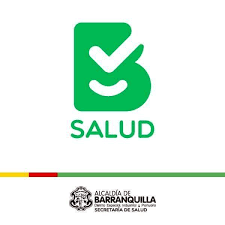
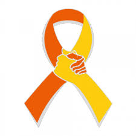
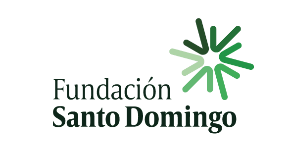
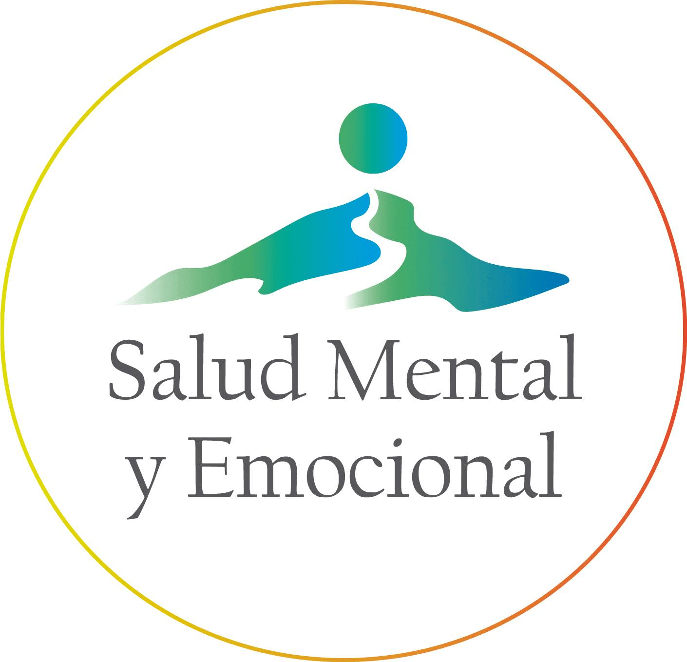
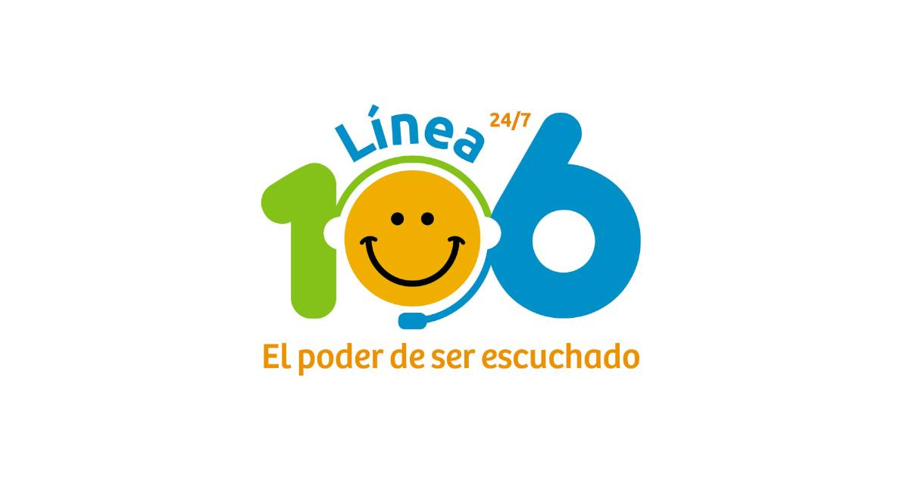

Líneas de ayuda y canales de atención

La Secretaría Distrital de Salud proporciona servicios de salud mental disponibles en Barranquilla.
Teléfono: +57 (605)4010205
Línea Amiga de la Policía Nacional ofrece apoyo emocional y orientación en situaciones de crisis.
Lineas 123 o 122 en Barranquilla

Línea Nacional de Prevención del Suicidio, brinda apoyo a aquellos que están en riesgo de suicidio.
Teléfono: 01 8000 113113

Fundación Santo Domingo sin fines de lucro ofrece recursos sobre bienestar emocional.
Teléfono: (57) 3850070

Línea Nacional de Salud Mental ofrece orientación en temas de salud mental.
Teléfono: 01 8000 11 00 08

Proporcionan orientación psicológica y apoyo emocional a personas que lo necesitan.
Teléfono: 01 8000 123456